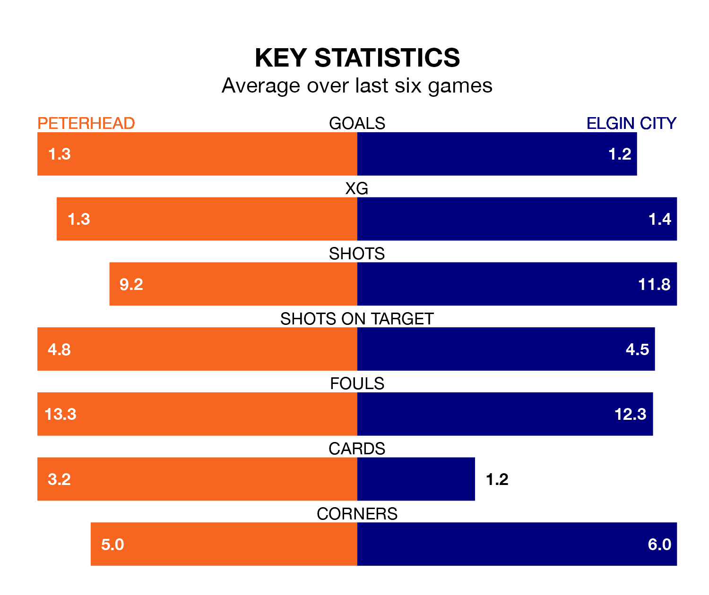

Relegation candidates Elgin City face a challenge away against high-flying Peterhead at the Balmoor Stadium on Saturday.
Elgin City are eighth in the League Two table, and have picked up eight wins and four draws in their 25 games to date.
The Blue Toon, meanwhile, are second in the standings with 42 points, having won 12 and drawn six, and are 15 points behind table-toppers Stenhousemuir.
With 23 goals in 25 games so far this season, Elgin are the league's lowest scorers with 0.9 goals per game. And they are conceding more than average, letting in 43 goals at a rate of 1.7 per game.
Peterhead, meanwhile, are above average scorers, with 1.6 goals per game, compared to a league average of 1.3. They have conceded 1.1 goals per game.
In the last 10 years, Peterhead and Elgin have played each other on 13 occasions. Peterhead won 11 of them and Elgin two.
On average, the Blue Toon scored 2.7 goals and the Black & Whites 0.7 in those matches.
Their last meeting was on December 30, when Elgin won 2-1 at home.
With Stuart McKenzie between the sticks, the Blue Toon can rely on one of the league's safest pair of hands. He has kept five clean sheets in his 24 appearances this season in League Two.
In City's net, Tom McHale also has five clean sheets in 24 games. He has conceded a goal every 60 minutes, 30% more often than the 77 minutes between goals for Stuart McKenzie.
The home team are in mixed form in League Two, with one win and four draws from their last six games.
With three wins and a draw over that period, the Black & Whites' form is better – they have taken 10 points from 18, compared to Peterhead's seven.
Peterhead's last match was on Tuesday, a 0-0 draw against Bonnyrigg Rose Athletic.
Elgin drew 2-2 with Stenhousemuir last time out, on February 17, with Brian Cameron and Russell Dingwall on the scoresheet.
Updated: 10:08 (UTC), 23/02/24